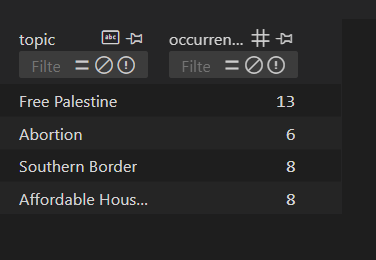
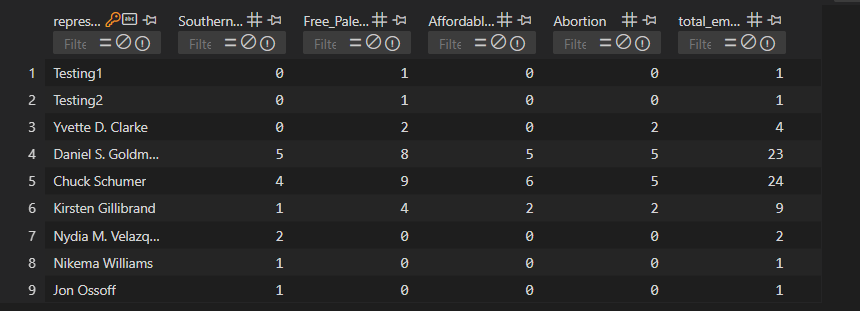
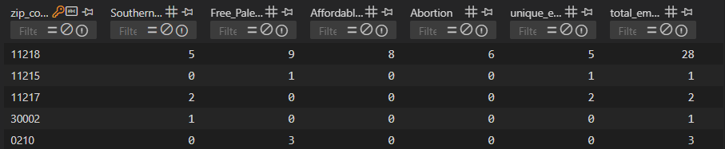
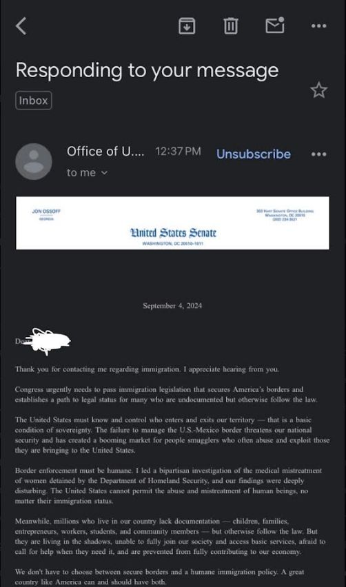
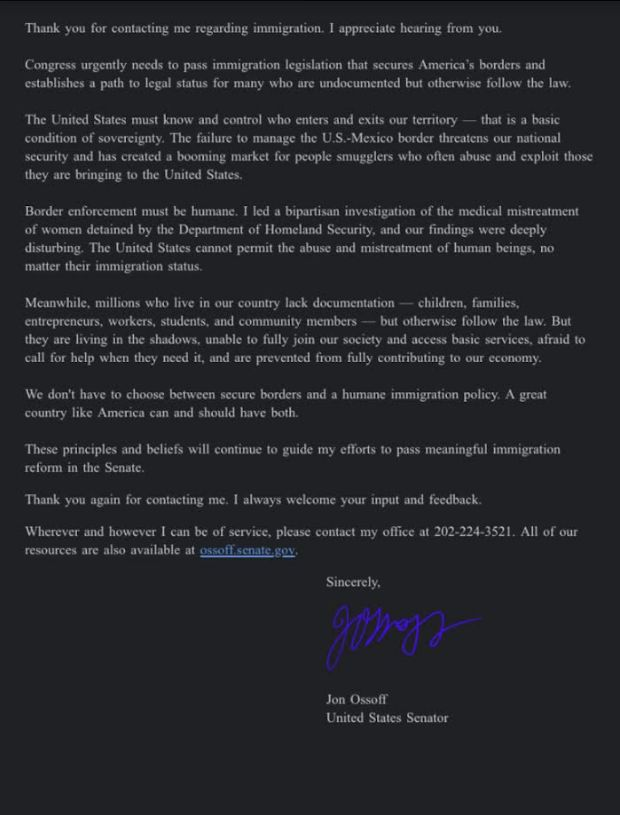

Intro
CivicConnect is a Communications-Based Civic Project that aims to shorten the contact lines between congressional representatives and the populations they represent. We aim to allow Americans to connect with their government and make changes without giving up their daily routines. We provide an easy-to-use platform to message both House and Senate representatives about topics Americans find most important. Reaching out to House and Senate represenatives may take a while as you will have to individually go to each represenatives page and fill in lot's of info before submitting. Thus CivicConnect streamlines this process.
Adding on, in-depth research is done to provide email templates available to all users, taking the time-consuming task of sifting through sources out of being civically engaged. The pre-written emails can be sent in a few easy clicks or can be edited to the user’s liking. By connecting citizens with Congress, the American people can be the deciders of their nation’s future.
Future Plans
- Go to the local level! Through crowdsourcing have it so that the users can also reach out to their local represenatives.
- Expand the number of prompts and have users submit prompts to.
- Demonstrate impact and use this site to influence the 2024 elections.
Analytics
Note: All this data is from our database and sensitive information such as name's are collected and data is encrypted. Also this data only consists of the emails that was sent through our platform. Emails that were sent by the user themselves were not accounted for as it's unreliable to know if the user has actually clicked the send button.

As of 9/24, Free Palestine has been our most popular topic.

As of 9/24, The represenatives Daniel S. Goldman and Chuck Schumer have been the represenatives that have been reached out the most.

As of 9/24, The vast majority of emails have been sent from zipcode 11218.
As of 9/24, CivicConnect has gotten 8 unique emails on the site.
Founders
Luke Corless
Head of Writing & Research Department
He/Him/His
Luke Corless is the Head of the Writing & Research Department at CivicConnect, where he does intensive research and drafts the email templates available to the program’s users on topics most Americans see as vital to the future of the nation. He is a current Roosevelt Network Forge Fellow and an avid writer as a Staff Writer for Connecticut College’s newspaper, The College Voice, and received Honorable Mention honors in the New York Times’ 2023 Student Editorial Competition.
Sudiptto Biswas
Technical Founder
He/Him/His
Sudiptto Biswas is the Technical Founder of CivicConnect, where he is responsible for the development and maintenance of the CivicConnect product. He is a current Computer Science major at Hunter College and has experience in programming and developing full-stack programs. He is an incoming software engineering intern @Microsoft. Previously he was an Explore Intern at Microsoft, Mentee at Microsoft and an Intern @TheCode
Contact Us
For any inquiries, please email us at: civic@civicconnect.net
Follow our LinkedIn page here: CivicConnect LinkedIn!
Impact
At CivicConnect impact is everything to us! So far we have gotten a response back from the Office of U.S. Senator Jon Ossoff of Georgia! As we grow we hope to get more responses back from represenatives and have some real world impact!
Here is the screenshot's of the email we got from the user who used CivicConnect!
Picture of Email

